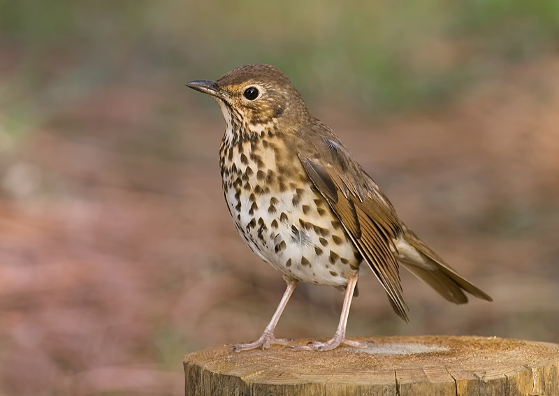
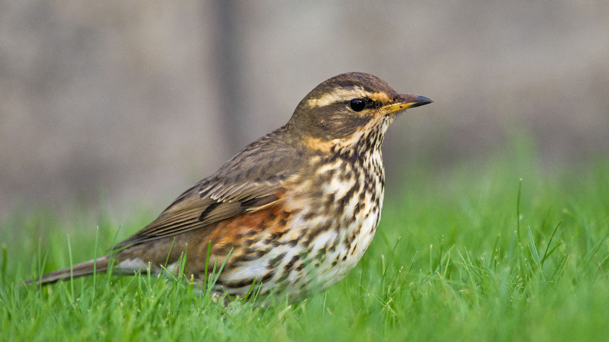
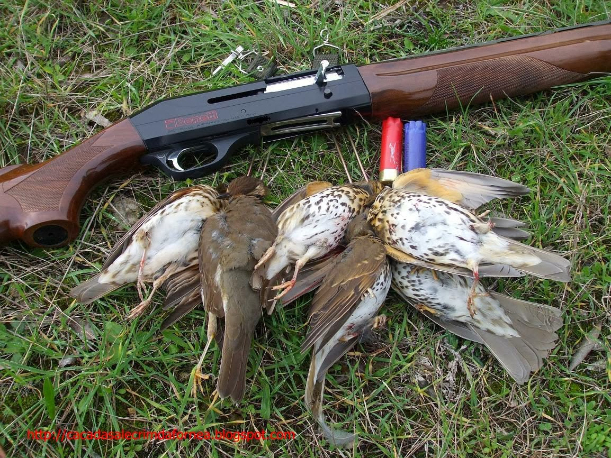
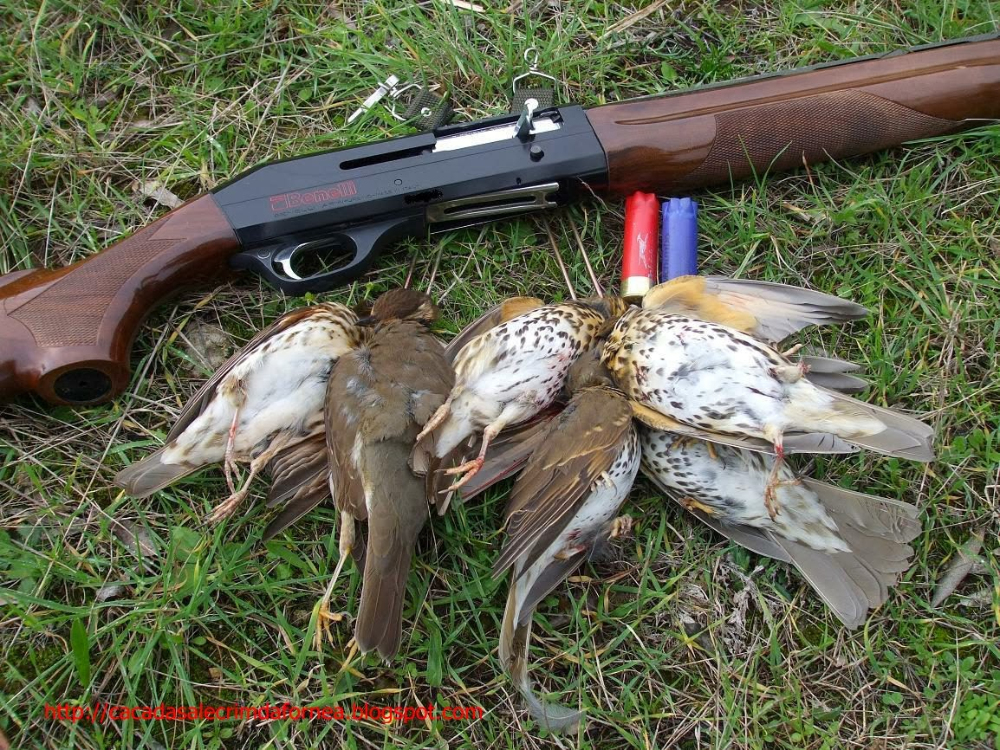

O Tordo em Portugal
Autor: Octávio Maia
Website: GitHub
Contacto: Email
Navegação rápida: Espécie | Habitat | Diversidade | Alimentação | Reprodução | Tordo na sociedade


Capítulo 1
Capítulo 1.1: Identificação da espécie
O Tordo possui um tamanho de cerca 16cm, tem a cabeça o manto e asas de cor castanha, o peito é de cor branca todo sarapintado com pequenas manchas castanho escuro, o bico é de cor negra com a parte inferior amarelada, as patas são de cor branco-amarelado e tem também pequenas manchas com um tom bege espalhadas um pouco por todo corpo.
Capítulo 1.2: Habitat
Esta espécie encontra-se um pouco por toda Europa e norte de África e foi também introduzida por volta do século XIX na Austrália e Nova Zelândia, registando-se actualmente três subespécies. Em Portugal pode ser encontrado em locais como matas ribeirinhas, bosques, florestas e até jardins e parques densamente arborizados, espalhados por todo o território nacional, desde as zonas mais altas até ao litoral, embora na época de nidificação prefira a zona do Minho e Tras os Montes. Nenhuma outra espécie de ave selvagem Portuguesa sofre tantas perdas as mãos dos caçadores estima-se que todos os anos sejam mortos entre seis a oito milhões de tordo Comum em Portugal.
Capítulo 1.3: Diversidade
Existem diversas sub-espécies do tordo, sendo as mais proeminentes as seguintes:
| Nome comum |
Nome cientifico |
Imagem |
| Tordo-comum |
Turdus philomelos |
LINK |
| Tordo-zornal |
Turdus pilaris |
LINK |
| Tordo-ruivo |
Turdus iliacus |
LINK |
| Tordo-de-cabeça-cinzenta |
Turdus obscurus |
LINK |
| Tordoveia |
Turdus viscivorus |
LINK |
Capítulo 1.4: Alimentação
Em Portugal a azeitona, quando disponível, é o principal alimento desta ave, mas em localidades ou épocas onde a azeitona não esta seu dispor, alimenta-se de pequenos frutos ou invertebrados, sendo de destacar a sua preferência por minhocas e pequenos caracóis.
Capítulo 1.5: Reprodução
A época de nidificação em Portugal ainda não esta muito bem documentada, sabendo-se apenas que prefere o norte do país e que nidifica entre os meses de Abril até Junho. Estudos em outros países Europeus, revelam que o Tordo Comum, criam regularmente entre duas a três ninhadas por ano, as posturas mais frequentes contem entre dois a três ovos, a incubação pode durar aproximadamente 13 dias e as crias começam a voar a partir de décimo quarto dia depois do nascimento.
Capítulo 2: O Tordo na sociedade
Portugal é um país com fortes raízes na caça. Cerca de 105 mil pessoas, maioritariamente estrangeiras, visitam o país todos os anos para praticar a caça, sendo que 75% da mesma se destine à caça ao tordo (Fonte: Público).
Isto leva a que a população do tordo tenha vindo a diminuir nos últimos anos. Prevê-se que existam menos de 10 mil tordos restantes no país, sendo que este número irá certamente diminuir devido à caça excessiva do animal.
 

{kind=link}
{kind=link}
{kind=link}
{kind=link}
{kind=link}